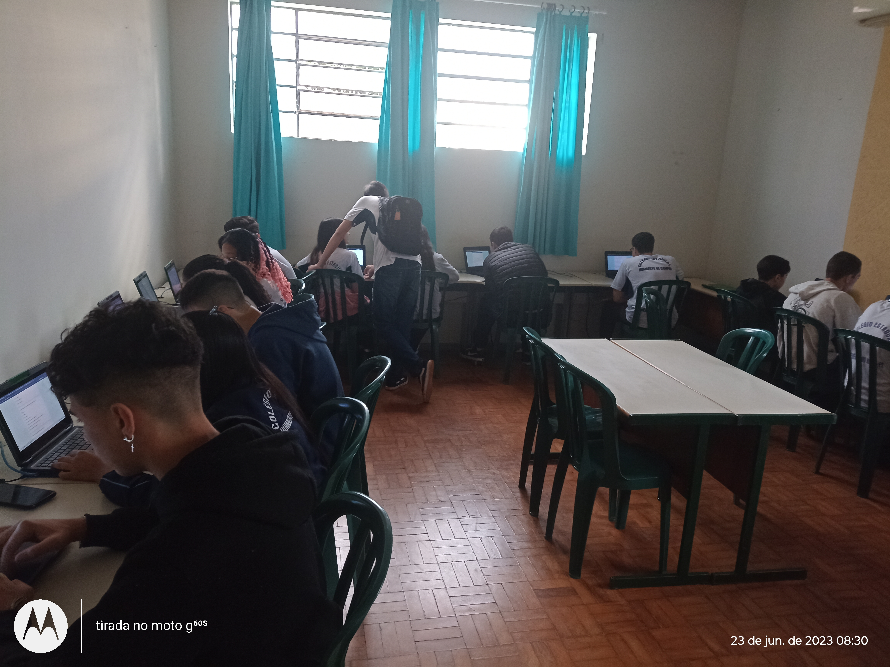
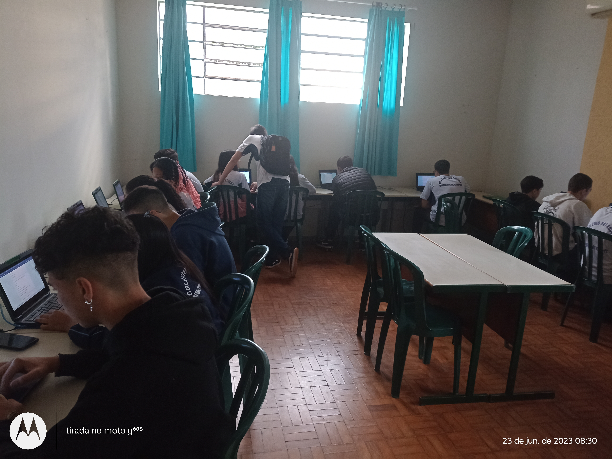

Momentos de Descontração no Laboratório
Nas aulas de Pensamamento Computacional do Colegio Estadual Humberto de Campos do municipio de Querência do Norte, os alunos estão aprendendo uma abordagem usada para solução de problemas, que utiliza conceitos básicos da Computação. As atividades desenvolvidas nessa perspectiva têm como finalidade contribuir: na construção do pensamento lógico; na habilidade de reconhecimento de padrões; para o desenvolvimento do raciocínio por meio dos quatro pilares, que são: decomposição, reconhecimento de padrões, abstração e algoritmos.
Nesse ano realizamos muitas atividade nas aulas de Pensamento Computacional, vamos relembrar alguns momentos.
Momentos de Descontração no Laboratório

 
